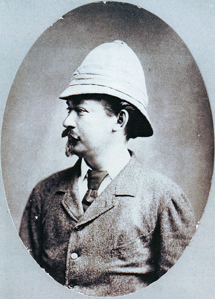

Cestopis
Charakteristika
Je to prozaický literární žánr, ve kterém autor popisuje cesty (nejčastěji) do cizích zemí.
Nejznámější autoři cestopisů:
Naši
- Václav Šašek z Bířkova (15. století): Deník o jízdě a putování pana Lva z Rožmitálu a z Blatné z Čech až na konec světa
- Alois Jirásek: Z Čech až na konec světa
- Karel Čapek: Anglické listy
- Emil Holub (obrázek, 18. století): První africká cesta, Druhá africká cesta
- Jiří Hanzelka a Miroslav Zikmund (20. století): cesty po Evropě, do Afriky a Jižní Ameriky
Cizí
- Marco Polo (Ital) 2. polovina 13. století a 1. třetina 14. století: cesty po Číně, nejznámější kniha: Milion
- Jonathan Swift (1667-1745, anglický spisovatel, více zde): Gulliverovy cesty
Jonathan Swift - Gulliverovy cesty - Cesta do Liliputu
Vypravěč, lékař Lemuel Gulliver, se po ztroskotání ocitl mezi trpaslíky. Připoutali ho provazy a zkoumali ho. Liliputi se s Gulliverem postupně spřátelili a naučili ho svůj jazyk. Jejich král je ochotný dát Gulliverovi svobodu. Liliputé sepsali všechno, co měl Gulliver na sobě. Měli ho rádi, už se ho nebáli, a tak mu dali svobodu. Král za to chtěl pomoci v boji proti sousední říši, Gulliver mu pomohl a válku vyhrál. Liliputi se za to o něj starali, šili mu šaty a krmili ho, i když to pro ně bylo nesmírně náročné.